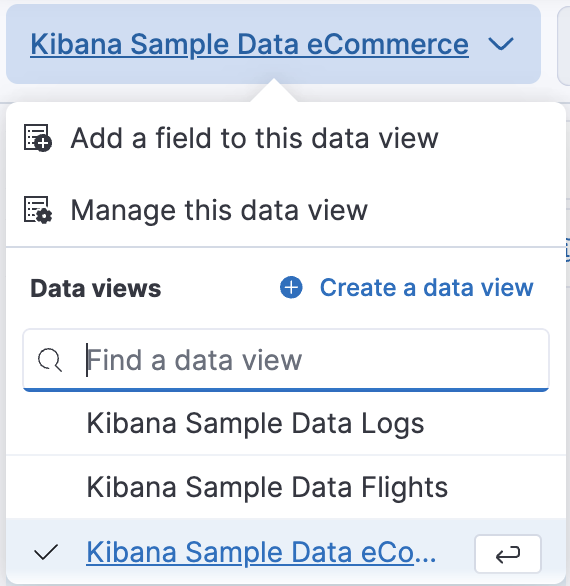
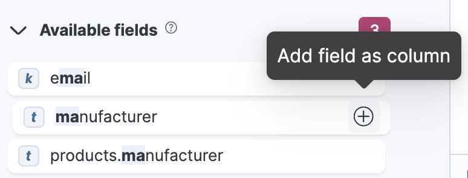
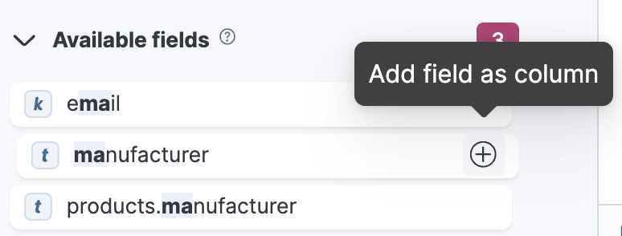
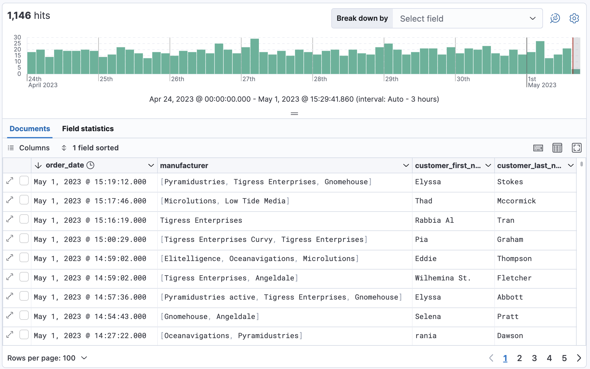
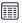
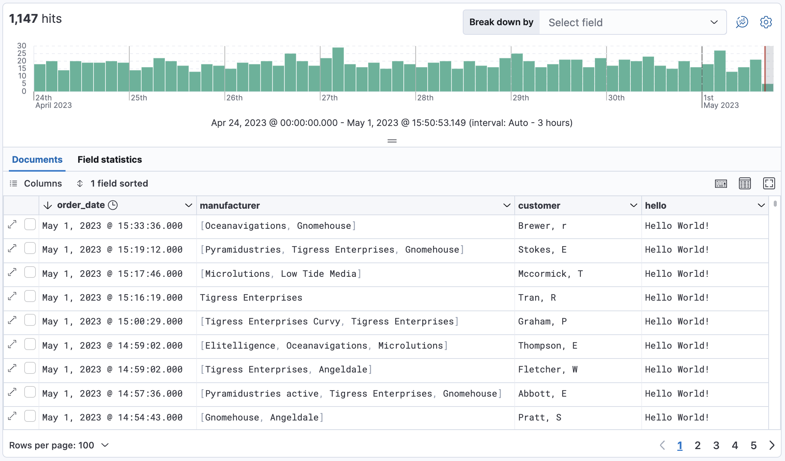
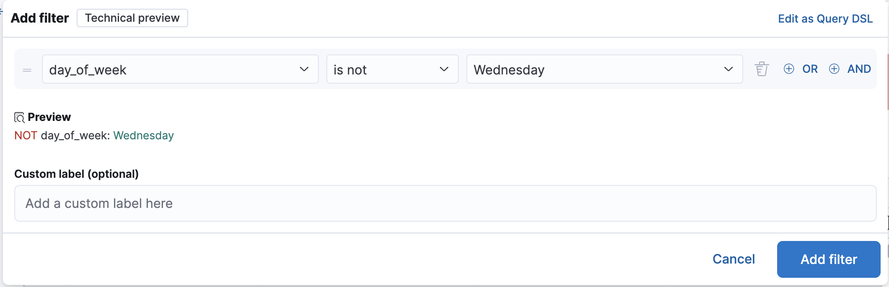
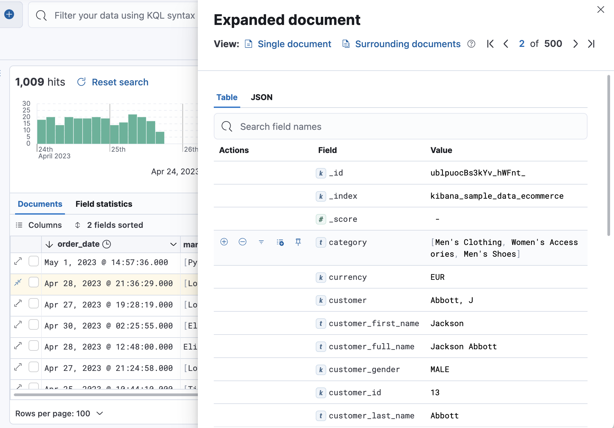
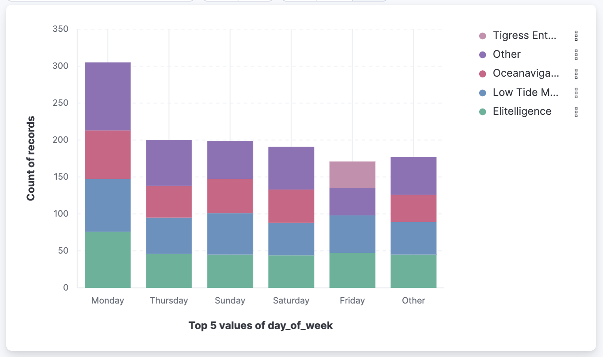

Discover
editDiscover
editYou have questions about your data. What pages on your website contain a specific word or phrase? What events were logged most recently? What processes take longer than 500 milliseconds to respond?
With Discover, you can quickly search and filter your data, get information about the structure of the fields, and display your findings in a visualization. You can also customize and save your searches and place them on a dashboard.
Explore and query your data
editThis tutorial shows you how to use Discover to search large amounts of data and understand what’s going on at any given time.
You’ll learn to:
- Select data for your exploration, set a time range for that data, search it with the Kibana Query Language, and filter the results.
- Explore the details of your data, view individual documents, and create tables that summarize the contents of the data.
- Present your findings in a visualization.
At the end of this tutorial, you’ll be ready to start exploring with your own data in Discover.
Prerequisites:
- If you don’t already have Kibana, set it up with our free trial.
- You must have data in Elasticsearch. This tutorial uses the ecommerce sample data set, but you can use your own data.
- You should have an understanding of Elasticsearch documents and indices and Kibana concepts.
Find your data
editTell Kibana where to find the data you want to explore, and then specify the time range in which to view that data.
- Open the main menu, and select Discover.
-
Select the data you want to work with.
Kibana uses a data view to tell it where to find your Elasticsearch data. To view the ecommerce sample data, open the data view menu, and then select Kibana Sample Data Ecommerce.
To create a data view for your own data, click Create a data view. For details, refer to Create a data view.
-
Adjust the time range to view data for the Last 7 days.
The range selection is based on the default time field in your data. If you are using the sample data, this value was set when you added the data. If you are using your own data, and it does not have a time field, the range selection is not available.
- To view the count of documents for a given time in the specified range, click and drag the mouse over the chart.
Explore the fields in your data
editDiscover includes a table that shows all the documents that match your search. By default, the document table includes a column for the time field and a column that lists all other fields in the document. You’ll modify the document table to display your fields of interest.
-
In the sidebar, enter
main the search field to find themanufacturerfield.
You can use wildcards in field searches. For example,
goe*destfindsgeo.destandgeo.src.dest. -
In the Available fields list, click
manufacturerto view its most popular values.Discover shows the top 10 values and the number of records used to calculate those values.
-
Click
 to toggle the field into the document table.
You can also drag the field from the Available fields list into the document table.
to toggle the field into the document table.
You can also drag the field from the Available fields list into the document table. -
Find the
customer_first_nameandcustomer_last_namefields and add them to the document table. Your table should look similar to this:
-
Optionally try out these actions:
- To rearrange the table columns, click a column header, and then select Move left or Move right.
- To copy the name or values in a column to the clipboard, click the column header and select the desired Copy option.
- To view more of the document table, click to open the Chart options menu, and then select Hide chart.
- For keyboard shortcuts on the document table, click .
- To set the row height to one or more lines, or automatically adjust the height to fit the contents, click .
- To toggle the table in and out of fullscreen mode, click the fullscreen icon .
Add a field to your data view
editWhat happens if you forgot to define an important value as a separate field? Or, what if you want to combine two fields and treat them as one? This is where runtime fields come into play. You can add a runtime field to your data view from inside of Discover, and then use that field for analysis and visualizations, the same way you do with other fields.
- In the sidebar, click Add a field.
-
In the Create field form, enter
hellofor the name. - Turn on Set value.
-
Define the script using the Painless scripting language. Runtime fields require an
emit().emit("Hello World!"); - Click Save.
-
In the sidebar, search for the hello field, and then add it to the document table.
-
Create a second field named
customerthat combines customer last name and first initial.String str = doc['customer_first_name.keyword'].value; char ch1 = str.charAt(0); emit(doc['customer_last_name.keyword'].value + ", " + ch1);
-
Remove
customer_first_nameandcustomer_last_namefrom the document table, and then addcustomer.
For more information on adding fields and Painless scripting language examples, refer to Explore your data with runtime fields.
Search your data
editOne of the unique capabilities of Discover is the ability to combine free text search with filtering based on structured data. To search all fields, enter a simple string in the query bar.

To search particular fields and build more complex queries, use the Kibana Query language. As you type, KQL prompts you with the fields you can search and the operators you can use to build a structured query.
Search the ecommerce data for documents where the country matches US:
-
Enter
g, and then select geoip.country_iso_code. - Select : for equals some value and US, and then click the refresh button or press the Enter key.
-
For a more complex search, try:
geoip.country_iso_code : US and products.taxless_price >= 75
Filter your data
editWhereas the query defines the set of documents you are interested in, filters enable you to zero in on subsets of those documents. You can filter results to include or exclude specific fields, filter for a value in a range, and more.
Exclude documents where day of week is not Wednesday:
-
Click next to the query bar.
-
In the Add filter pop-up, set the field to day_of_week, the operator to is not, and the value to Wednesday.

- Click Add filter.
- Continue your exploration by adding more filters.
- To remove a filter, click the close icon (x) next to its name in the filter bar.
Look inside a document
editDive into an individual document to view its fields and the documents that occurred before and after it.
-
In the document table, click the expand icon
 to show document details.
to show document details.
- Scan through the fields and their values. If you find a field of interest, hover your mouse over the Actions column for filters and other options.
- To create a view of the document that you can bookmark and share, click Single document.
- To view documents that occurred before or after the event you are looking at, click Surrounding documents.
Save your search for later use
editSave your search so you can use it later, generate a CSV report, or use it to create visualizations, dashboards, and Canvas workpads. Saving a search saves the query text, filters, and current view of Discover, including the columns selected in the document table, the sort order, and the data view.
- In the toolbar, click Save.
- Give your search a title.
- Optionally store tags and the time range with the search.
- Click Save.
Visualize your findings
editIf a field can be aggregated, you can quickly visualize it from Discover.
-
In the sidebar, find and then click
day_of_week.
-
In the popup, click Visualize.
Kibana creates a visualization best suited for this field.
-
From the Available fields list, drag and drop
manufacturer.keywordonto the workspace.
-
Save your visualization for use on a dashboard.
For geo point fields (
 ),
if you click Visualize,
your data appears in a map.
),
if you click Visualize,
your data appears in a map.
Share your findings
editTo share your findings with a larger audience, click Share in the Discover toolbar. For detailed information about the sharing options, refer to Reporting.
Generate alerts
editFrom Discover, you can create a rule to periodically check when data goes above or below a certain threshold within a given time interval.
- Ensure that your data view, query, and filters fetch the data for which you want an alert.
-
In the toolbar, click Alerts > Create search threshold rule.
The Create rule form is pre-filled with the latest query sent to Elasticsearch.
- Configure your query and select a connector type.
- Click Save.
For more about this and other rules provided in alerting features, go to Alerting.
What’s next?
edit- Learn more about the structure of a KQL query.
- Search for relevance.
- Configure the chart and document table to better meet your needs.